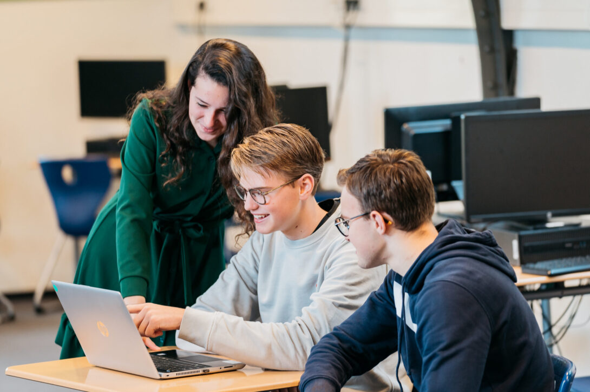
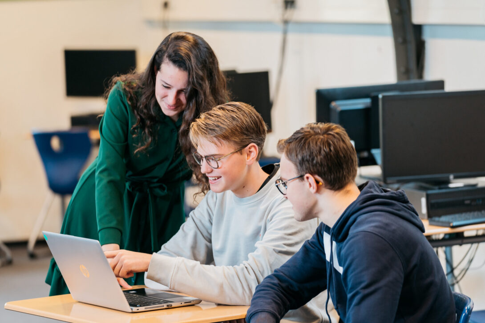
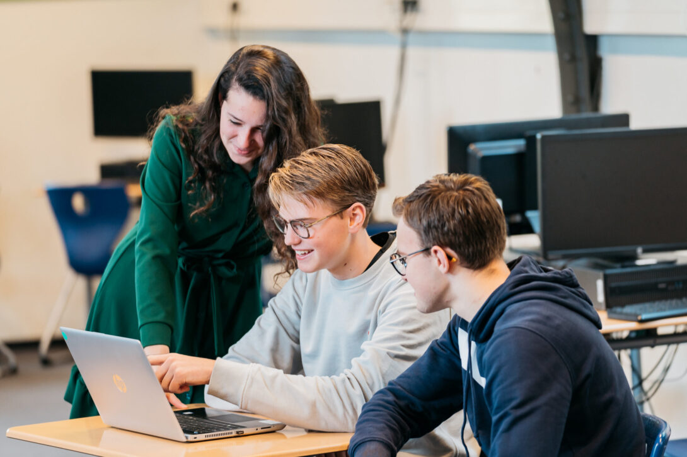

Ouderinformatieavond ICT, wij laten zien wat wij geleerd hebben in de afgelopen maand, waaronder programeren, computersbouwen, datacomunicatie en veel meer
Met deze opleiding leer je hoe je moet programmeren van websites en apps voor de smartphone of andere apparaten.
Met deze opleiding leer je hoe je mensen kunt helpen met technische problemen, bijvoobeeld met netwerk, telefoon, computer of een ander IT-systeem
Met deze opleiding leer je hoe datacom, de beveiliging van dingen online en cloudsystemen werken

De inloop begint om 19:15
de opening begint 19:30
je krijgt van de leerlingen presentaties en demonstraties die gemaakt zijn in groepjes van 2 en een vlog van Duitsland die in groepjes van 4 zijn gemaakt